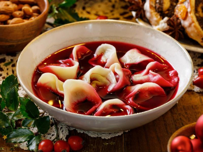
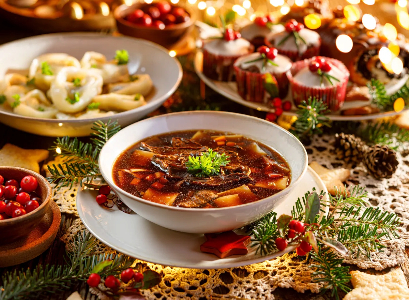
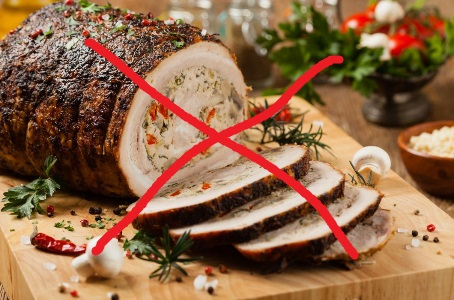
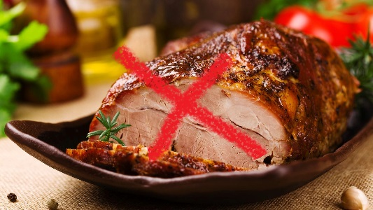
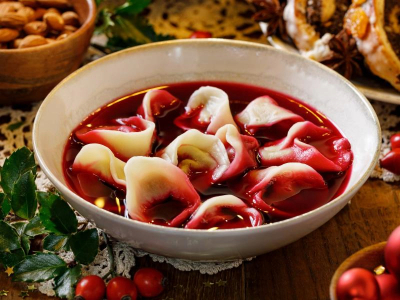
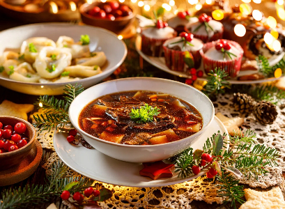
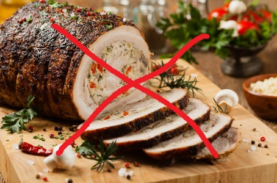
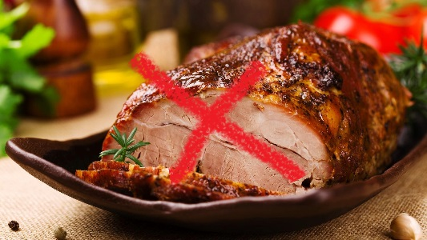

Potrawy świąteczne to najważniejsze część wigilii. Stół, który jest pełen domowo robionych posiłków specjalnie na tą okazję, to jedna z rzeczy zwłaszcza uszczęśliwiająca akurat dorosłych, ponieważ raz do roku mogą spróbować pysznych specjalnych dań. W Polsce lista tych posiłków jest nieliczna, ale nie obejdzie się bez takich rzeczy jak: ryb, pierogów z grzybami i kapustą oraz barszczu czerwonym.
 
Nie ma żadnych dokładnych powodów zabraniających, ale według Książ i Biskupów w Święta nie powinno się jeść mięsa po to, aby jeszcze bardziej skupić się na istocie tego dnia, czyli wcieleniu Chrystusa. Oznacza to, że mięso można jeść, ale zalecane jest, żeby tego nie robić specjalnie dla chrześcijan.
 
 
Dlaczego nie jemy mięsa w Święta?
 